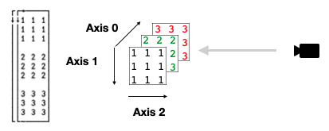
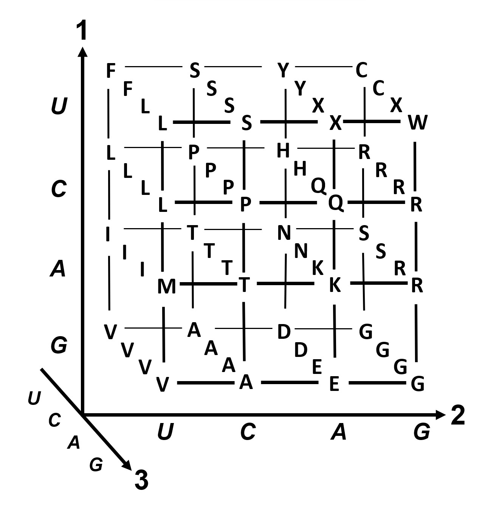

Dyadic transpose: A⍉B¶
The development of mathematics toward greater precision has led, as is well known, to the formalization of large tracts of it, so that one can prove any theorem using nothing but a few mechanical rules… One might therefore conjecture that these axioms and rules of inference are sufficient to decide any mathematical question that can at all be formally expressed in these systems. It will be shown below that this is not the case, that on the contrary there are in the two systems mentioned relatively simple problems in the theory of integers that cannot be decided on the basis of the axioms. –Kurt Gödel
⎕IO ← 0
]box on -style=max
]rows on
assert←{⍺←'assertion failure' ⋄ 0∊⍵:⍺ ⎕signal 8 ⋄ shy←0}
Mastery of the dyadic form of Transpose (A⍉B) – together with Rank (⍤) – is considered the mark of the accomplished array programmer. Let’s see if it’s as hard to grasp as its reputation suggests.
Some other resources on dyadic transpose:
Dyalog docs
Most programmers have probably had at least some exposure to linear algebra, and so have internalised the concept of the transpose of a matrix: the x-axis becomes the y-axis, and vice-versa. We’ve alreay met the monadic form:
⎕ ← B ← 3 4⍴9 4 2 7 2 5 4 7 8 6 1 2 6 8 2 9
⍉B
We can see what was the x-axis is now the y-axis as we said. If we generalise this a bit, transpose is an operation that reorders axes. It just happens to be the case that in the rank-2 case, there is only one other possible ordering.
In the dyadic form of transpose, we are explicit about the new axis order:
1 0⍉B ⍝ Same result as the monadic form: x-is-y
So far, so obvious. However… once the rank increases, it becomes harder to visualise perhaps what’s going on. One tip is to not think of the array itself having its axes pulled and moved, but to instead think of the observer (you, or “the camera”) moving around the array.
Consider rank-3:
m ← 3 3 3⍴1 1 1 1 1 1 1 1 1 2 2 2 2 2 2 2 2 2 3 3 3 3 3 3 3 3 3

Imagine if we want to rearrange this array such that the new view is that indicated by the camera symbol, to see the array as three slices each of:
3 3⍴1 2 3
We’d need to rotate the scene 90 degrees clockwise around the current axis 1. So axis 1 stays the same, but axes 0 and 2 changes position:
2 1 0⍉m
When rank goes above 3, it becomes tricker to visualise this way, but instead, think about what each resulting major cell should look like – typically, when you need dyadic transpose, you have an idea what shape each cell should take, and you can usually work backwards from there to deduce the correct axis ordering.
But perhaps the main question remains – what is this all useful for? A great deal, as it turns out. One helpful clue is that Transpose, including its dyadic form, is one of the functions allowing for modified assignment. We talked about that in the section on indexing earlier. By assigning to the dyadic transpose of an array we can “fill” it from a data source that has the elements laid out in a different arrangement.
We can use the same example data as above to illustrate this. Let’s say that our data is a ravel of recurring 1, 2, 3 to give 27 elements, but we want it organised as our original matrix we used above, with the major cells being 3 3⍴9/1, 3 3⍴9/2 and 3 3⍴9/3 respectively
⎕ ← data ← ∊9/⊂1 2 3
mat ← 3 3 3⍴0 ⍝ Empty matrix
We can now assign through the dyadic Transpose to fill our empty matrix in a different axis order:
(2 1 0⍉mat) ← 3 3 3⍴data
mat
Let’s look at a higher-rank example. Given a 6×6 matrix, partition it into four non-overlapping partitions of size 3×3. Can we achieve this using dyadic Transpose? Here’s our matrix:
⎕ ← mat ← 6 6⍴⍳36
Let’s reshape this into an array of shape 2 3 2 3 (rank 4), like so:
⎕ ← r4 ← 2 3 2 3⍴mat
The first cell has turned the first three rows of our original matrix into a rank 3 array where the cells are shape 2 3, essentially “folding” each row in half:
0⌷r4
We can now look to reorder the axes. After a bit of thought we can say that we need the shape to be 2 2 3 3 before we have a go at partitioning. If we think of the 3×3 at the end as given by the task at hand (our partition sizes), we know that we’ll ultimately need two “rows” and two “cols” of those. So we currently have a shape of 2 3 2 3, so we flip the middle two axes:
⎕ ← reorder ← 0 2 1 3⍉r4
That looks right: each 3×3 cell is correct. We just need to enclose each rank-2 cell:
⊂⍤2⊢reorder
Translating RNA into Protein¶
Here’s an example from Project Rosalind – a great problem collection in the field of bioinformatics: http://rosalind.info/problems/prot/
The ask is to take an mRNA sequence and encode specific “codons” into the amino acid alphabet. No, I don’t know what that means either, but it doesn’t matter: we have a sequence of letters, which when grouped into triplets define a point in a 4×4×4 matrix.
The “codon table” is given as:
UUU F CUU L AUU I GUU V
UUC F CUC L AUC I GUC V
UUA L CUA L AUA I GUA V
UUG L CUG L AUG M GUG V
UCU S CCU P ACU T GCU A
UCC S CCC P ACC T GCC A
UCA S CCA P ACA T GCA A
UCG S CCG P ACG T GCG A
UAU Y CAU H AAU N GAU D
UAC Y CAC H AAC N GAC D
UAA Stop CAA Q AAA K GAA E
UAG Stop CAG Q AAG K GAG E
UGU C CGU R AGU S GGU G
UGC C CGC R AGC S GGC G
UGA Stop CGA R AGA R GGA G
UGG W CGG R AGG R GGG G
and you’d be excused for not seeing the 4×4×4 matrix immediately popping out at you. However, the question links to a Wikipedia page which has the following helpful illustration:

So let’s take the values from the table given and make the above 3D representation from it, and then solve this Rosalind problem. The “Stop” codons is basically just the “EOL” – we can call that ‘.’ for simplicity. Picking the values and reshaping those to 4×4×4:
4 4 4⍴'FLIVFLIVLLIVLLMVSPTASPTASPTASPTAYHNDYHND.QKE.QKECRSGCRSG.RRGWRRG'
Now let’s figure out the axis order. Looking at the table (and graph), the coordinate order is U, C, A, G. Let’s look at the first few entries in the table again:
UUU F CUU L AUU I GUU V
UUC F CUC L AUC I GUC V
UUA L CUA L AUA I GUA V
UUG L CUG L AUG M GUG V
We can see that when the leading coordinate changes we get FFLL, LLLL, IIIM, VVVV, so our current axis ordering isn’t correct. Looking at the graph, we can see that this corresponds to placing the “camera” to the left, looking right – our first axis is probably where it should be. Let’s try to flip the other two:
0 2 1⍉4 4 4⍴'FLIVFLIVLLIVLLMVSPTASPTASPTASPTAYHNDYHND.QKE.QKECRSGCRSG.RRGWRRG'
Hmm, the first row of the first cell is correct, but not the rest, but if the first axis is correct we have no options left, right? Let’s try a monadic transpose, too:
0 2 1⍉⍉4 4 4⍴'FLIVFLIVLLIVLLMVSPTASPTASPTASPTAYHNDYHND.QKE.QKECRSGCRSG.RRGWRRG'
That looks correct. Now we can solve this problem:
codon ← 0 2 1⍉⍉4 4 4⍴'FLIVFLIVLLIVLLMVSPTASPTASPTASPTAYHNDYHND.QKE.QKECRSGCRSG.RRGWRRG'
]dinput
prot ← {
enc ← 0 1 2 3['UCAG'⍳⍵] ⍝ Convert RNA string from UCAG to 0123
¯1↓codon[⊂⍤1⊢(3÷⍨≢enc) 3⍴enc] ⍝ Group into triplets and index into codon table, and drop Stop.
}
We can try this on the example given in the question:
test ← 'AUGGCCAUGGCGCCCAGAACUGAGAUCAAUAGUACCCGUAUUAACGGGUGA'
⎕ ← r ← prot test
assert 'MAMAPRTEINSTRING'≡r
Best figures in $MONTH¶
One more? Let’s say we have a team of sellers who report their results monthly. We have a set of historical data going back a number of years. Which seller produced the best results in a particular month in a particular year?
Here are the monthly figures for our twenty five sellers going back ten years (as a random selection, like all sales figures are):
⎕IO ← 0
sales ← ?10 25 12⍴250
Our array has the axes ordered year, seller id, month. So how can we pick the best performing seller in (say) April, year 6?
Most APLers would probably reach for bracket indexing, and rightly so – it feels natural:
year ← 6
month ← 3
sales[year;;month] ⍝ Sales figures for month/year
But we can also dyadic Transpose here to avoid the bracket indexing. We have a couple of options – we want to select sellers results over a specific month in a specific year, so one approach is to make the year the first axis, followed by the month and then seller id: first go to the filing cabinet for year 6. Pull out the April drawer. Rifle through the folders of sales results and pick the one with the largest total.
year month⌷0 2 1⍉sales
Picking the best is the first item in the grade-down:
⊢employee_of_the_month←⊃⍒year month⌷0 2 1⍉sales
We could have achieved the same thing with axes reversed, too:
month year⌷1 2 0⍉sales
The filling order¶
When we shape a matrix in APL, the “filling order” follows the axis order. When this filling order isn’t what you need, that’s another indication that you may want to consider dyadic transpose. Consider an example: let’s say you have a vector of integers
⊢data←⍳45
where each group of 9 has 3 sub-groups that we’d like to separate out. Without dyadic transpose, perhaps we’d try something like this:
⎕ ← m←(9÷⍨≢data) 9⍴data
↑(m[;0 1 2])(m[;3 4 5])(m[;6 7 8])
Looking at the fill order, we can see that the result fills cell 0, row 0, cell 1, row 0, cell 2, row 0, cell 0, row 1 etc, instead of following the axis order, which would have looked like
3 5 3⍴data
We know that we need to end up with the shape 5 3 3, and that we want to grab triplets in order from the data. So we first need to reshape the data to give us triplets in fill order as the rows its major cells:
5 3 3⍴data
We know the desired shape is 3-5-3, so our only option is:
1 0 2⍉5 3 3⍴data
There is an additional hard-won lesson here. Let’s look at the shapes:
⍴5 3 3⍴data
No surprises there, right. So we reorder the first two axes, to get a shape of 3-5-3:
⍴1 0 2⍉5 3 3⍴data
The last two axes have the same dimensions, so we could equally well use the 2-0-1 order and maintain the 3-5-3 shape, right? Wrong:
⍴2 0 1⍉5 3 3⍴data ⍝ SURPRISE!
This goes to the heart of the matter why dyadic Transpose is difficult to grasp. Morten Kromberg offered the following explanation on the APL Orchard:
Many people are confused by dyadic Transpose because the “intuitive” interpretation of the left argument is that it gives the order that you want to select dimensions of the right argument for the result, when in fact it gives the NEW position of each of the dimensions (he says nervously, hoping he got that right after 40 years of practice). –Morten Kromberg
In other words, the left argument 2 0 1 does not mean “take the old axis 2 and make that the new axis 0, take the old axis 0 and make that the new axis 1 and finally, take the old axis 1 and make that the new axis 2”.
Instead it means:
The old axis 0 is now axis 2
The old axis 1 is now axis 0
The old axis 2 is now axis 1
Perhaps this chapter should have started, rather than ended, with this.